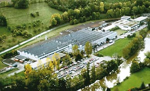
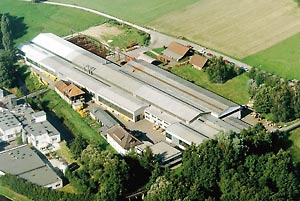

Elevação e movimentação de cargas
Há 130 anos a STAHL CraneSystems está comprometida em produzir e oferecer tecnologia de equipamentos de elevação e movimentação de cargas - leia mais em 'Um Pouco de História'. A equipe de desenvolvimento altamente qualificada apresenta em seu currículo inúmeras invenções pioneiras que influenciam decisivamente o progresso no setor.
A empresa abastece o mercado mundial com equipamentos e componentes como:
- Talhas elétricas de cabo de aço
- Maquinários de elevação
- Pontes rolantes completas
- Componentes para fabricantes de pontes rolantes.
STAHL CraneSystems foi fundada em 1876 e possui duas fábricas na Alemanha, uma em Künzelsau e outra em Ettlingen. Além das fábricas, são criados equipamentos com tecnologia de ponta nas filiais ao redor do mundo.

Fábrica de talhas elétricas e componentes
A faixa de capacidade dos equipamentos de elevação e movimentação de cargas da STAHL CraneSystems varia de 125kg a 160.000kg, e podem atender todas necessidades de seus clientes inclusive em áreas classificadas que requerem equipamentos à prova de explosão. Neste segmento a STAHLCraneSystems utiliza componentes de fabricação própria e ocupa uma excelente posição no mercado.

Toda a linha de produtos é atualizada constantemente e garante a qualidade e tecnologia de ponta oferecida pela Stahl.
Produtos STAHL:
- Talha elétrica de corrente
- Talhas elétricas de cabo de aço
- Ponte rolante apoiada univiga
- Ponte rolante apoiada dupla-viga
- Pontes rolantes suspensas
- Guindaste giratório
- Monovias
- Blocos de rodas
- Kit de componentes
Peças sobressalentes; manutenção preventiva e corretiva
Consultoria especializada em transporte e movimentação de carga e fornecimento de componentes para outros fabricantes.
Todos os equipamentos podem ser fornecidos na versão á prova de explosão.